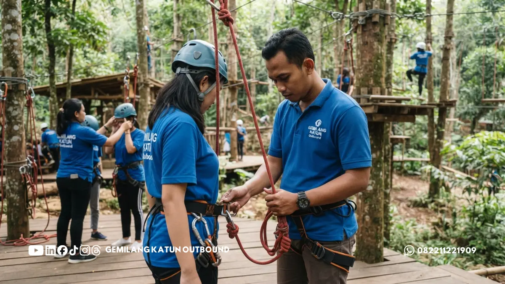

Daftar Isi
- Mengapa Keselamatan Outbound Perlu Diperiksa Sebelum Memesan?
- Apa Saja Standar Keselamatan Dasar Kegiatan Outbound?
- Apa yang Berbeda dari Keselamatan Rafting Dibanding Outbound Darat?
- Bagaimana Cara Memeriksa Kualifikasi Tim Lapangan Provider?
- Apa yang Wajib Diperiksa pada Peralatan dan Perlengkapan?
- Bagaimana Prosedur Darurat yang Layak Dimiliki Provider?
- Bagaimana Memastikan Briefing dan Kondisi Peserta Terkelola?
- Pertanyaan Apa yang Perlu Diajukan Sebelum Menandatangani Pemesanan?
- Apa Kesalahan Umum Panitia Saat Memilih Provider Outbound?
- Langkah Praktis untuk Panitia Sebelum Memilih Provider
- Pertanyaan Umum (FAQ)
Keselamatan kegiatan outbound ditentukan oleh instruktur yang berlisensi resmi, peralatan teknis yang terawat, prosedur darurat tertulis, serta manajemen risiko terencana. Seluruh aspek vital tersebut wajib diverifikasi secara cermat sebelum Anda mengonfirmasi pemesanan provider.
Tingkat keamanan outbound dinilai dari lima pilar utama: kompetensi tim pemandu lapangan, keandalan fisik perlengkapan, kesiapan mitigasi medis darurat, penyampaian pengarahan keselamatan, dan pemetaan kondisi kesehatan seluruh peserta rombongan.
Informasi yang disajikan dalam ulasan ini bersifat edukasi manajerial dan tidak menggantikan inspeksi teknis tenaga ahli keselamatan profesional maupun pertimbangan medis resmi di lokasi kegiatan.
Mengapa Keselamatan Outbound Perlu Diperiksa Sebelum Memesan?
Pemeriksaan aspek keselamatan sebelum memesan provider outbound meminimalkan potensi cedera peserta sekaligus mengamankan nama baik panitia. Persiapan yang buruk sering kali baru disadari setelah terjadi insiden berbahaya di lapangan.
Banyak kalangan menganggap outbound hanyalah agenda rekreasi santai. Faktanya, aneka simulasi kerap melibatkan bentang ketinggian tali, arus perairan deras, tantangan alam terbuka, hingga kontak fisik yang membutuhkan ketahanan tubuh prima.
Setiap tantangan alam tersebut menyimpan potensi bahaya tersembunyi yang hanya bisa dikendalikan jika provider berpedoman pada standar operasional ketat. Penyelenggara yang disiplin selalu menempatkan keselamatan di atas efisiensi biaya.
Panitia penanggung jawab acara memikul beban moral serta reputasi lembaga. Ketika peserta terdiri atas rekan kerja kantor, pelajar, atau anggota komunitas, kecermatan memilih vendor membuktikan dedikasi dan perlindungan tulus bagi mereka.
Apa Saja Standar Keselamatan Dasar Kegiatan Outbound?
Standar keselamatan minimum outbound mencakup keberadaan tim pemandu kompeten, peralatan yang diuji rutin, dokumen mitigasi risiko tertulis, alur evakuasi darurat, safety briefing terarah, serta kesiapsiagaan peralatan medis pertolongan pertama.
Karena belum ada satu daftar baku yang berlaku seragam untuk semua provider, panitia perlu memahami kaidah dasarnya. Prinsip pertama adalah ketersediaan analisis risiko tertulis untuk setiap modul permainan maupun wahana simulasi.
Provider profesional wajib sanggup menguraikan potensi bahaya spesifik dari tiap aktivitas, personel yang ditugaskan mengawal, serta langkah korektif terukur apabila dijumpai hambatan atau situasi genting saat program berjalan.
Prinsip kedua menyangkut rasio pengawasan personel terhadap peserta. Jumlah pemandu harus seimbang dengan skala kerumunan dan profil risiko wahana, di mana aktivitas tali tinggi dan perairan membutuhkan rasio pendampingan lebih rapat.
Prinsip ketiga adalah transparansi dokumentasi kerja. Penyelenggara tepercaya menyiapkan jadwal rundown tertulis, manifes perlengkapan, nama kepala regu operasional, serta jalur evakuasi yang dapat ditelaah panitia jauh hari sebelum acara berlangsung.
Prinsip keempat adalah kesiapan sarana medis dasar. Kotak P3K standar lengkap, petugas tanggap darurat berlisensi, serta kesiapan rujukan cepat menuju fasilitas kesehatan terdekat merupakan syarat mutlak yang tidak boleh diabaikan.
Apa yang Berbeda dari Keselamatan Rafting Dibanding Outbound Darat?
Arung jeram atau rafting membawa risiko dinamis berupa arus liar sungai, fluktuasi debit air hulu, serta ancaman tenggelam. Karena itu, aktivitas ini menuntut pemandu sungai bersertifikat, pelampung berdaya apung tinggi, dan helm kokoh.
Simulasi outbound darat umumnya berkutat pada risiko terjatuh, terkilir, atau lecet akibat gesekan tali gantungan. Sebaliknya, rafting bersentuhan langsung dengan kekuatan alam yang bergerak liar dan sulit diprediksi secara kasat mata.
Curah hujan lebat di daerah tangkapan air hulu pegunungan berpotensi memicu banjir bandang kilat di lintasan jeram, kendati cuaca di dermaga awal tampak benderang. Pemandu sungai andal wajib memantau perubahan debit secara berkala.
Provider rafting yang berintegritas berani mengambil sikap tegas menunda atau membatalkan sesi pengarungan apabila elevasi sungai melampaui batas aman. Panitia perlu menyepakati kebijakan penundaan ini agar tidak terjadi benturan kerugian.
Perlengkapan arung jeram juga memiliki spesifikasi teknis khusus. Tiap orang wajib mengenakan jaket pelampung (life jacket) yang fit di badan, helm benturan, serta dayung ergonomis yang didukung tali lempar penyelamat di tiap perahu.
Untuk melengkapi pertimbangan keamanan cuaca harian, panitia dianjurkan memantau radar cuaca resmi melalui portal Badan Meteorologi, Klimatologi, dan Geofisika (BMKG) sebelum menetapkan jadwal keberangkatan.
Peserta wajib dibekali keterampilan teknis dasar perahu karet, mulai dari posisi tumpuan kaki, cara memegang bilah dayung, hingga teknik mengapung pasif jika terlempar ke air. Prosedur ini diulas mendalam pada sesi safety briefing.
Bagaimana Cara Memeriksa Kualifikasi Tim Lapangan Provider?
Penilaian kualifikasi personel lapangan dilakukan dengan memverifikasi sertifikat kompetensi kepanduan, jam terbang pengalaman kerja, serta kejelasan pembagian fungsi antara instruktur keselamatan teknis dan fasilitator permainan kelompok.
Kualitas personel lapangan menjadi penentu paling krusial bagi keselamatan rombongan. Perlengkapan paling mahal sekalipun menjadi tidak berguna apabila ditangani oleh staf amatir yang minim pelatihan penyelamatan darurat di alam bebas.
Panitia berhak menanyakan daftar instruktur bertugas, rekam jejak pelatihan yang pernah diselesaikan, dan lisensi resmi dari Badan Nasional Sertifikasi Profesi (BNSP) atau federasi olahraga arus deras yang masih berstatus aktif.
Perlu disadari bahwa instruktur teknis dan fasilitator dinamika kelompok memiliki fungsi kerja berbeda. Instruktur mengawal keselamatan wahana, sedangkan fasilitator mengolah nilai pembelajaran. Baca ulasan mendalam pada artikel instruktur dan fasilitator outbound.
Pastikan pula para pemandu memiliki sertifikat pelatihan pertolongan pertama (First Aid / CPR) yang telah diperbarui secara berkala. Sertifikat kedaluwarsa tanpa penyegaran praktik patut dicatat sebagai sinyal kelemahan komitmen provider.
Apa yang Wajib Diperiksa pada Peralatan dan Perlengkapan?
Semua peralatan outbound dan rafting wajib bebas dari cacat fisik, berfungsi sempurna, dan melalui pengujian rutin berkala. Panitia sebaiknya meminta jadwal perawatan serta standar pemusnahan perlengkapan yang aus.

Komponen yang perlu diperiksa ketat antara lain jahitan sabuk pengaman (body harness), kelenturan dan serat inti tali karmantel, kunci otomatis karabiner logam, kekencangan buckle pelampung, serta kerapatan dinding perahu karet.
Tanda-tanda kerusakan kasat mata seperti serat tali yang menipis atau terburai, jahitan harness yang koyak, hingga helm yang retak mengindikasikan bahwa peralatan tersebut telah melewati batas pemakaian aman dan wajib diganti.
Kesesuaian ukuran perlengkapan merupakan syarat wajib keselamatan. Pelampung yang terlalu longgar mudah terlepas dari leher saat tubuh terlempar ke arus, sedangkan helm sempit dapat membatasi sirkulasi darah kepala peserta.
Pastikan provider menyiapkan variasi dimensi ukuran helm dan pelampung yang lengkap, mencakup ukuran untuk peserta bertubuh besar hingga peserta berpostur ramping, agar seluruh rombongan terlindungi secara optimal.
Bagaimana Prosedur Darurat yang Layak Dimiliki Provider?
Prosedur darurat yang memadai memuat bagan alur tindakan tertulis, hierarki komando pengambilan keputusan, alat transmisi komunikasi, kotak pertolongan pertama lengkap, serta peta jalur evakuasi menuju puskesmas atau rumah sakit terdekat.
Pihak provider harus sanggup menjawab pertanyaan taktis dengan tegas: apa protokol tindakan saat ada peserta pingsan, cedera sendi, atau terhanyut di jeram. Jawaban yang runtut mencerminkan bahwa tim benar-benar terlatih menangani krisis.
Saluran komunikasi lapangan wajib dipersiapkan matang. Sejumlah destinasi perbukitan dan lembah sungai kerap memiliki blank spot sinyal seluler, sehingga tim operasional memerlukan perangkat radio komunikasi (handy talkie) portabel.
Panitia juga berhak mengetahui nama instalasi medis rujukan, jarak tempuh kendaraan evakuasi, serta unit ambulans siaga di lokasi. Untuk rujukan protokol kesehatan resmi, kunjungi laman Kementerian Kesehatan Republik Indonesia (Kemenkes).
Bagaimana Memastikan Briefing dan Kondisi Peserta Terkelola?
Panitia memastikan keamanan peserta dengan mewajibkan sesi safety briefing terstruktur sebelum aktivitas dimulai, sekaligus menghimpun kuesioner data riwayat kesehatan fisik peserta jauh hari sebelum hari pelaksanaan agenda.
Safety briefing darat adalah fase paling mendasar saat aturan main, batas area bahaya, kode isyarat peluit, dan teknik evakuasi disampaikan. Pengarahan yang dipersingkat secara terburu-buru hanya akan melahirkan risiko kepanikan massal.
Faktor kesiapan jasmani peserta sangat menentukan keselamatan kelompok. Peserta yang memiliki riwayat penyakit asma, jantung, epilepsi, dislokasi sendi, atau fobia ketinggian memerlukan perlakuan penyesuaian khusus dari instruktur.
Kedua aspek ini saling berkelindan. Pengarahan materi terbaik tidak akan bekerja optimal tanpa pemetaan data medis peserta, begitu pula catatan riwayat medis lengkap akan sia-sia jika tidak diterjemahkan menjadi tindakan kehati-hatian di lapangan.
Pertanyaan Apa yang Perlu Diajukan Sebelum Menandatangani Pemesanan?
Sebelum membubuhkan tanda tangan kontrak pemesanan, panitia wajib menanyakan legalitas instruktur, kondisi peralatan, alur darurat, perlindungan asuransi peserta, kebijakan pembatalan cuaca, serta batasan rasio pendampingan.
Berikut daftar pertanyaan kunci yang dapat diajukan panitia sebagai parameter evaluasi profesionalitas vendor penyedia jasa:
- Siapa nama penanggung jawab keselamatan lapangan dan bagaimana rincian lisensi keahliannya?
- Apakah tersedia salinan analisis risiko tertulis untuk setiap wahana simulasi yang kami sewa?
- Berapa rasio jumlah instruktur pendamping terhadap peserta pada wahana bertingkat risiko tinggi?
- Kapan pengujian kelayakan peralatan terakhir kali dilakukan dan apa kriteria pensiun alat tersebut?
- Bagaimana skenario penanganan korban kecelakaan dan ke fasilitas kesehatan mana peserta dirujuk?
- Apakah biaya paket telah mencakup premi asuransi kecelakaan resmi serta apa saja batas cakupannya?
- Bagaimana klausul penjadwalan ulang jika kondisi cuaca hulu atau debit sungai dinyatakan berbahaya?
- Apakah agenda acara memberikan durasi khusus untuk pengarahan keselamatan sebelum aktivitas dimulai?
Dokumentasikan seluruh jawaban provider secara tertulis dan jadikan sebagai lampiran kesepakatan pemesanan. Keberanian vendor memberikan rincian hitam di atas putih menjadi bukti kredibilitas layanannya.
Apa Kesalahan Umum Panitia Saat Memilih Provider Outbound?
Kekeliruan umum panitia meliputi pemilihan vendor semata-mata berdasarkan tawaran harga termurah, tidak meminta bukti kualifikasi tertulis, meremehkan peringatan cuaca buruk, serta mengabaikan pendataan riwayat kesehatan rombongan.
Tergiur oleh harga murah sering kali berujung pada kompromi standar keselamatan, seperti pemangkasan rasio pemandu, pemakaian alat seadanya yang kedaluwarsa, atau penghapusan fasilitas asuransi kecelakaan diri.
Panitia juga kerap terbuai oleh ulasan testimoni media sosial tanpa memvalidasi dokumen operasional riil. Ulasan positif di internet patut diapresiasi, namun inspeksi prosedur kerja resmi tetap menjadi pelindung hukum utama.
Kesalahan fatal lainnya adalah memaksakan agenda luar ruang saat cuaca memburuk demi mengejar jadwal padat perusahaan. Sikap keras kepala ini menekan provider mengambil risiko yang mengancam nyawa peserta di lapangan.
Langkah Praktis untuk Panitia Sebelum Memilih Provider
Keselamatan outbound dan arung jeram bertumpu pada perpaduan personel bersertifikat, perawatan alat yang disiplin, alur darurat yang teruji, safety briefing berkualitas, dan pemahaman kondisi fisik seluruh peserta.
Terapkan langkah-langkah praktis kepanitiaan berikut sebelum menyepakati kerja sama dengan provider outbound:
- Minta manifes profil instruktur lapangan beserta salinan sertifikasi teknis dan lisensi P3K aktif.
- Minta salinan SOP mitigasi risiko dan alur tanggap darurat tertulis untuk dipelajari internal.
- Tanyakan jadwal pemeliharaan peralatan teknis dan sepakati klausul kompensasi cuaca buruk.
- Pastikan safety briefing berdurasi cukup dijadwalkan secara wajib sebelum setiap sesi simulasi.
- Kumpulkan formulir riwayat kesehatan peserta secara rahasia dan serahkan kepada penanggung jawab medis.
- Bandingkan penawaran minimal dua provider berbeda berdasarkan transparansi keselamatan, bukan hanya harga.
Artikel ini menyajikan panduan umum keselamatan dan bukan pengganti instruksi teknis dari tenaga ahli bersertifikat. Konsultasikan agenda rombongan Anda bersama provider berlisensi resmi untuk menjamin keselamatan menyeluruh.
PERTANYAAN UMUM (FAQ)
Butuh Provider Outbound & Rafting dengan Standar Keselamatan Terpercaya di Malang?
Konsultasikan Program via WhatsApp 0822-1122-1909